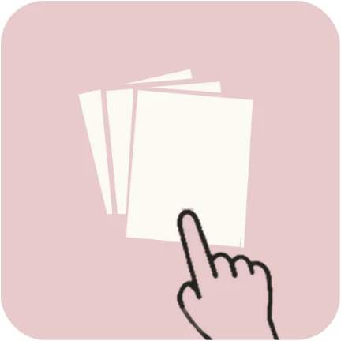
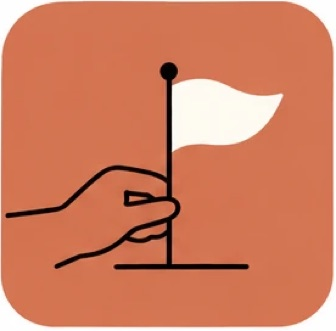
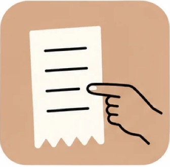

El dibujo no se mueve de lugar, pero el trazo tiembla como si cada cuadro se hubiera vuelto a dibujar a mano. Son tres versiones del mismo trazo que se alternan, igual que en el stop motion. No hace falta ningún dibujo nuevo: es un filtro sobre las ilustraciones que ya existen.
La misma ilustración, a la izquierda sin filtro y a la derecha con el temblor.

VivoDonde tiene sentido: cuando la pantalla espera algo de la persona (estados vacíos) o cuando la app está trabajando (sincronizar, preparar el enlace). En listas y botones se queda quieto.

Aún no tienes eventos.
Todavía no hay gastos.Los 17 íconos con el mismo temblor, para ver que ninguno se deforma de más.